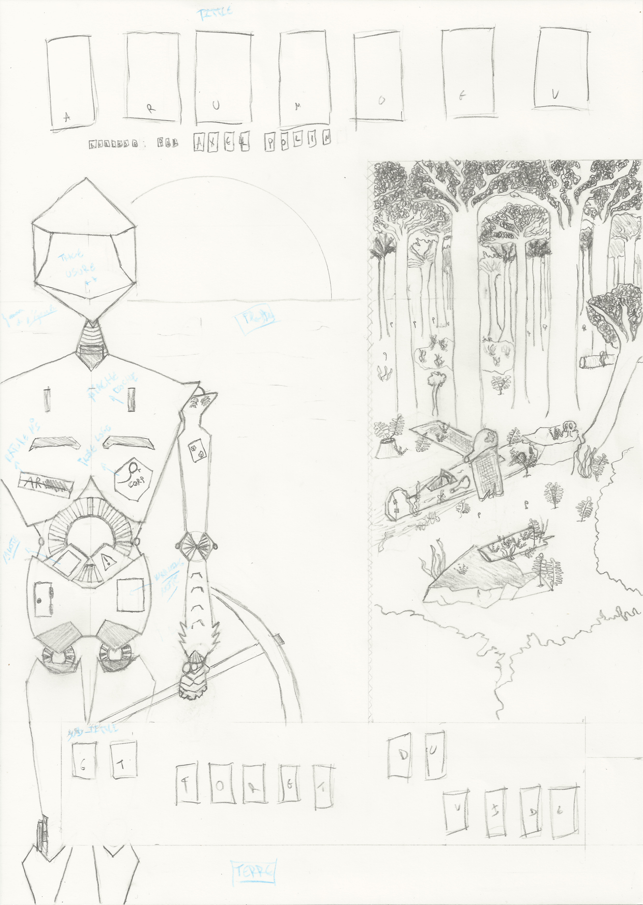

ARUMOEVet la forêt du vide
Synopsis
Lieu : Quelque part où vous ne voudriez pas vivre...
Date : À une époque sombre où il n'y a pas la place pour tout le monde
Un jour, quelque part, la routine... Arumoev tente de rentrer chez lui après une journée de travail habituelle.
Cependant son appareil tombe en panne au-dessus de la forêt du vide. Il sombre sans grand bruit dans cet impitoyable millieu.
Un seul but pour lui maintenant revenir à la maison le plus vite possible... mais pour cela il faut se réveiller.
NOTE : Les droits d’auteurs sont retenus par Axel Polin [2019]
Copyleft: cette œuvre est libre, vous pouvez la copier, la diffuser et la modifier selon les termes de
la Licence Art Libre
Cette note concerne l'intégralité de l'œuvre.
Pré-Production
OÙ ? QUAND ? COMMENT ? POURQUOI ? [1 sem]
Script, Histoire, Personnage, Recherches
Les croquis, Feuilles de référence [1 sem]
La story-line et le découpage en plan
Story-Board
Corriger, relire, corriger...
Production
Test []
X-sheet
Extremes
Breakdowns
Inbetweens
Scan
Colorisation
Rendu des scans
Musique et bruitage
Post-Production
Postsynchronisation
Compositing
Montage
Étalonnage
Finition & Première diffusion
Correction
Portfolio (cliquez sur les images pour avoir une description)
Présentation
Affiche du film (encrage à la plume et aquarelle).
Le titre possède une police (Tonik BRK) très "Nature" avec des couleurs foncées. Le texte apparaît comme apparaîtraient des ruines entourées de jungle.
Pour marquer le contraste, presque l'opposition entre Nature et Machine le titre est repris en Morse (Radios in Motion Hard).
Cette idée se retrouve dans le sous-titre (Granular BRK) lui aussi repris mais cette en fois en binaire (Atari).
La forêt est glauque, menaçante. Elle semble vide malgré la vie qui s'y développe.
Le couché de soleil est appaisant, rassurant, il s'agit de ce que peut voir Arumoev depuis chez lui.
Concernant Arumoev, la vie ne l'a pas épargné. Il a des marques un peu partout et sa construction parait fragile.
Son numéro de série est barré comme pour oublier un passé confus et compliqué.
Affiche finale
Making-off
Création de l'affiche du film

Le crayonné de l'affiche. Certains détails ont changé. Des cases sont positionnées pour le lettrage.
Affiche crayonnée
L'encrage est terminé. J'ai utilisé trois plumes classiques dans l'encrage manga : G-pen, Maru-Pen et Saji-Pen
Affiche encrée

Dernière étapes à la main sans ordinateur, la couleur.
J'ai utilisé des crayons aquarelles pour avoir un aspect fait main presque "bricolage". En effet, le "bricolage" fait partie intégrante de l'univers du film.
Affiche colorisée
Recherches : feuilles de références
La feuille de référence d'Arumoev et de son aeronef. Elle peut subir des modifications.
Note pour l'aéronef : Cet aéronef reprend le style de l'avion de Marco dans "Porco Rosso (Kurenai no Buta)". Il possède des réacteurs futuristes sur les côtés.
Il est bricolé car Arumoev est pauvre. Pour ses couleurs : celle de l'avion d'origine + du bleu pour le réservoire (et bout des ailes).
Note pour Arumoev : Arumoev est un robot mineur. Il est pauvre. Il a une famille car il fait partie de la deuxième génération issue de la débacle.
Maintenant la concurence est rude entre mineurs (nombreux sabotages,...)
[Petit arbre généalogique : 1ere génération --> débacle les robots fuient la ville ;
2eme génération --> la génération 1 fabrique la génération 2]
Il est doux, patient, ingénieux. Air un peu triste.
Feuille de référence Arumoev et Aeronef
La feuille de référence pour la forêt et papi.
Note pour la forêt : La flore qui nous intéresse est organisée de la manière suivante
[Schéma de la forêt : conifères feuillus peristents ; isoetes ; eau ; lycopodes ; bryophytes couvrant ; beaucoup d'humus].
Ajout : des boules de suies peuplent la forêt (rappelle studio Ghibli).
Note pour Papi robot : Personnage ne sera pas appronfondit. Il s'agit d'une présence bienveillante peut-être la seule (avec la famille d'Arumoev).
Il s'agit de "papi" souriant mais toujours l'air triste. La vie ne l'a pas épargné (très abimé ==> 1ere génération). Un personnage qui pourrait avoir son propre film.
Impossible de faire ressortir sa profondeur dans un court-métrage ==> y réféchir.
Feuille de référence Forêt et Papi